<meta charset="utf-8">
<title>STS Christmas Ad Mockups</title>
<meta name="claude:viewport-fit-sides" content="cover">
<style>
/* layout: a review column; each ad = a Facebook feed card beside its notes, gallery folded underneath */
:root{--bg:#F2F3F0;--card:#FFFFFF;--ink:#1c1e21;--mute:#5f6b5f;--line:#d9ddd5;--gold:#E9B242;--feed:#F0F2F5}
@media (prefers-color-scheme:dark){:root:not([data-theme="light"]){--bg:#141614;--card:#1f221f;--ink:#e6e8e3;--mute:#a9b3a6;--line:#3a3f39;--feed:#2a2d2a;color-scheme:dark}}
:root[data-theme="dark"]{--bg:#141614;--card:#1f221f;--ink:#e6e8e3;--mute:#a9b3a6;--line:#3a3f39;--feed:#2a2d2a;color-scheme:dark}
body{background:var(--bg);color:var(--ink);font:15px/1.45 -apple-system,Helvetica,Arial,sans-serif;padding-block:16px;padding-left:max(16px,env(safe-area-inset-left,0px));padding-right:max(16px,env(safe-area-inset-right,0px))}
main{max-width:1080px;margin:auto} h1{font-family:Georgia,serif;text-wrap:balance} section{background:var(--card);border-radius:12px;padding:16px;margin:20px 0}
h2{margin:0;text-wrap:balance} .meta{color:var(--mute);font-size:13px;margin:4px 0 12px}
.row{display:flex;gap:20px;flex-wrap:wrap} .fb{width:100%;max-width:500px;min-width:0;border:1px solid var(--line);border-radius:8px;overflow:hidden;background:var(--card)}
.hd{display:flex;gap:8px;padding:12px;font-size:14px} .hd span{color:var(--mute);font-size:12px}
.av{width:40px;height:40px;flex:none;border-radius:50%;background:#35383F;display:grid;place-items:center} .av img{width:28px;height:28px}
.pt{padding:0 12px 12px;font-size:15px} .more{color:var(--mute)} .rest{display:none} .fb:hover .rest,.fb:focus-within .rest{display:inline} .fb:hover .more,.fb:focus-within .more{display:none}
.hero{width:100%;display:block} .noimg{padding:80px;text-align:center;background:var(--feed);color:var(--mute)}
.ft{display:flex;justify-content:space-between;align-items:center;gap:8px;padding:10px 12px;background:var(--feed)}
.url{font-size:12px;color:var(--mute)} .hl{font-weight:700} .ds{font-size:13px;color:var(--mute)}
.btn{background:var(--line);color:var(--ink);padding:8px 12px;border-radius:6px;font-weight:600;white-space:nowrap}
.notes{flex:1;min-width:0;flex-basis:260px;font-size:14px} .notes h3{font-size:12px;letter-spacing:.06em;text-transform:uppercase;color:var(--mute);margin:12px 0 4px} small{color:var(--mute)}
details{margin-top:12px} summary{cursor:pointer} .gal{display:grid;grid-template-columns:repeat(auto-fill,minmax(150px,1fr));gap:8px;margin-top:8px}
details .sheet{width:100%;margin-top:8px;border-radius:6px} figure{margin:0} figure img{width:100%;border-radius:4px;display:block} figcaption{font-size:11px;color:var(--mute)}
</style><main>
<h1>Countdown to Christmas 2026: ad mockups (email-based copy)</h1>
<p>One feed mockup per ad. The text above the photo is cut where Meta folds it (about 125 characters); hover or tap the ad to see the full text. Images are STS's own LMS class images, unedited. Full-size originals of every image are in the class-images folder. Draft: not approved, not uploaded.</p>

<section id="v2-01-cold-flu">
 <h2>Herbal Cold and Flu Remedies</h2>
 <p class=meta>Ad set from Wed Dec 2 · teacher: Doc Jones · hook 94 chars</p>
 <div class=row>
  <div class=fb tabindex=0>
   <div class=hd><div class=av></div><div><b>School of Traditional Skills</b><br><span>Sponsored</span></div></div>
   <div class=pt>What if this winter&#x27;s remedies came off your own kitchen shelf instead of the drugstore aisle?<br><br>Drugstore remedies add up<span class=more> ...See more</span><span class=rest> fast, they&#x27;re not always on the shelf when you need them, and it can leave you feeling like you&#x27;re guessing in your own home. Families shouldn&#x27;t have to depend on a store shelf to care for each other.<br><br>A couple of years ago, Carolyn and I invited Doc Jones to walk through our herb garden here in northern Idaho. He pointed out plant after plant he knows and uses, and honestly it was a really eye-opening afternoon.<br><br>Doc teaches Herbal Cold and Flu Remedies step by step: 16 herbs, how to grow or forage them, how to dose them safely, and how to make his elderberry syrup. You don&#x27;t need all 16, just start with what you have. Get the class for $29 (usually $199), only 250 spots, and these classes sell out every year.</span></div>
   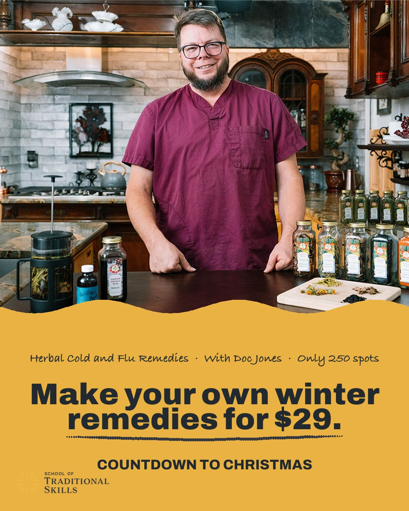
   <div class=ft><div><div class=url>SCHOOLOFTRADITIONALSKILLS.COM</div><div class=hl>Herbal Winter Remedies You Can Trust</div><div class=ds>Get Doc Jones&#x27; class for $29 before it sells out.</div></div><div class=btn>Shop Now</div></div>
  </div>
  <div class=notes>
   <h3>Alternate opener (Copy Doc hook 2)</h3><p>Growing herbs already but still not sure how to turn them into a syrup or a tincture?</p>
   <h3>Headline options</h3><ol><li>Herbal Winter Remedies You Can Trust <small>(36)</small></li><li>Make Your Own Winter Remedies <small>(29)</small></li><li>Elderberry Syrup From Your Own Kitchen? Let&#x27;s Make It! <small>(54)</small></li></ol>
   <h3>Pulled from these emails</h3><ul><li>22068217 &#x27;You can save $338 on cold and flu meds!&#x27; (Dec 8 2025)</li><li>21858428 &#x27;It&#x27;s beginning to look a lot like flu season!&#x27; (Nov 26 2025)</li></ul>
   <h3>Flags</h3><p>Left out the email&#x27;s unsourced &#x27;$338 a year&#x27; figure and its &#x27;stop colds and flus&#x27; / &#x27;clear lungs&#x27; claims (Meta health policy).</p>
  </div>
 </div>
 <details><summary>All 30 LMS images for this class</summary>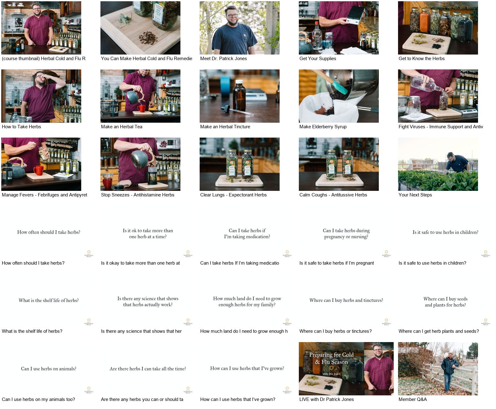</details>
</section>
<section id="v2-02-sourdough">
 <h2>Traditional Sourdough</h2>
 <p class=meta>Ad set from Fri Dec 4 · teacher: Maureen Diaz · hook 76 chars</p>
 <div class=row>
  <div class=fb tabindex=0>
   <div class=hd><div class=av></div><div><b>School of Traditional Skills</b><br><span>Sponsored</span></div></div>
   <div class=pt>Tired of sourdough recipes so rigid and strict you&#x27;re afraid to miss a step?<br><br>Most sourdough advice comes with so many rules<span class=more> ...See more</span><span class=rest> that it feels like you need a science degree just to bake a loaf. Real bread shouldn&#x27;t be that intimidating.<br><br>At our house, the best part of the holidays is family and friends around the table, taking time to give thanks. And there&#x27;s just something about a warm kitchen with bread rising on the counter that makes it feel like home.<br><br>Maureen Diaz teaches Traditional Sourdough without the rigid rules: artisan loaves, soft sandwich bread, and every bit of your starter used up in waffles, tortillas, even cake. It&#x27;s really doable. Get it for $29 (usually $199), only 250 spots, and these classes sell out every year.</span></div>
   
   <div class=ft><div><div class=url>SCHOOLOFTRADITIONALSKILLS.COM</div><div class=hl>From Your Own Starter to a Fresh Loaf</div><div class=ds>Get Maureen&#x27;s class for $29 before it sells out.</div></div><div class=btn>Shop Now</div></div>
  </div>
  <div class=notes>
   <h3>Alternate opener (Copy Doc hook 2)</h3><p>Never baked with sourdough and not sure how to get a starter going?</p>
   <h3>Headline options</h3><ol><li>From Your Own Starter to a Fresh Loaf <small>(37)</small></li><li>Artisan Sourdough Without the Strict Rules <small>(42)</small></li><li>Sourdough Without a Rigid Recipe? Let&#x27;s Bake! <small>(45)</small></li></ol>
   <h3>Pulled from these emails</h3><ul><li>22023684 &#x27;It&#x27;s beginning to look a lot like...&#x27; (Dec 3 2025)</li></ul>
   <h3>Flags</h3><p>Left out &#x27;banish bloat and blood sugar spikes&#x27; (health claim) and the unsourced &#x27;$9 loaves&#x27;. Discard lessons (waffles, tortillas, cake) verified in the LMS.</p>
  </div>
 </div>
 <details><summary>All 34 LMS images for this class</summary>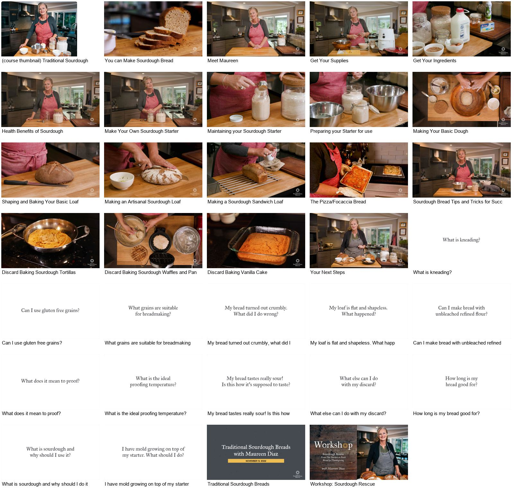</details>
</section>
<section id="v2-03-backyard-chickens">
 <h2>Backyard Chickens</h2>
 <p class=meta>Ad set from Sat Dec 5 · teacher: Harvey Ussery · hook 77 chars</p>
 <div class=row>
  <div class=fb tabindex=0>
   <div class=hd><div class=av></div><div><b>School of Traditional Skills</b><br><span>Sponsored</span></div></div>
   <div class=pt>Dreaming of fresh eggs with deep orange yolks from hens in your own backyard?<br><br>Most of the costly mistakes with chickens<span class=more> ...See more</span><span class=rest> happen before you ever collect an egg, and the internet hands you ten different answers for every question. Raising a few hens shouldn&#x27;t feel like a gamble.<br><br>I&#x27;ll be honest with you: when Carolyn and I started out on raw land in 2007, we kept our chickens in confinement and bought everything in. I mean, this is embarrassing, but nobody showed us a better way. You don&#x27;t have to learn it the hard way like we did.<br><br>Harvey Ussery&#x27;s Backyard Chickens class walks you step by step from brooder setup to daily care, so you go into spring with real confidence. Get it for $29 (usually $199) or gift it to the chicken dreamer in your family. There are only 250 spots, and these classes sell out every year.</span></div>
   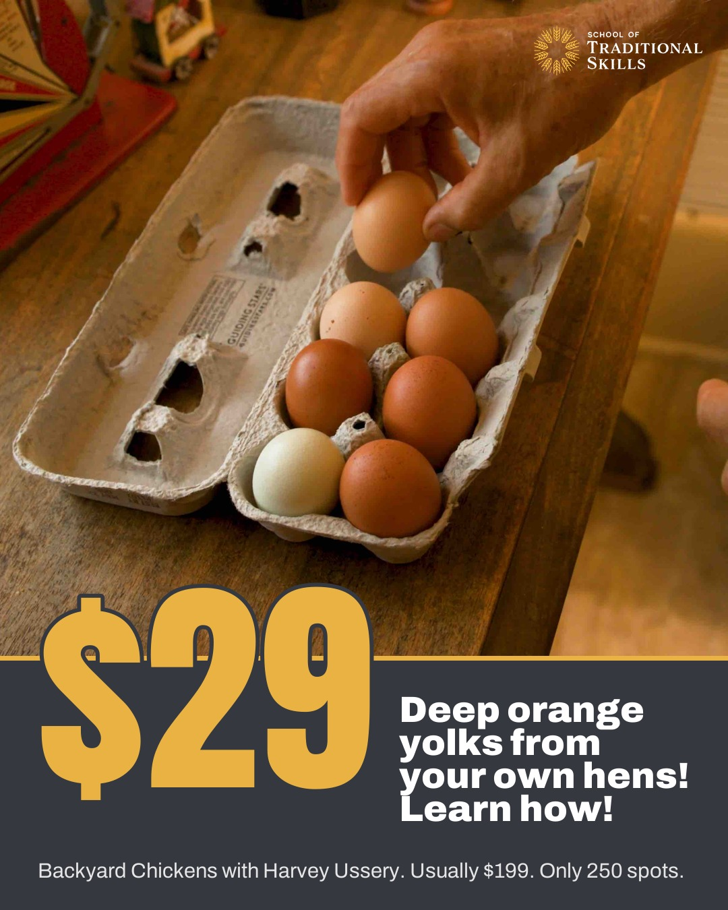
   <div class=ft><div><div class=url>SCHOOLOFTRADITIONALSKILLS.COM</div><div class=hl>Enjoy Fresh Eggs From Your Own Backyard</div><div class=ds>Get Harvey&#x27;s class for $29, or give it as a gift.</div></div><div class=btn>Shop Now</div></div>
  </div>
  <div class=notes>
   <h3>Alternate opener (Copy Doc hook 2)</h3><p>Never raised chickens and not sure where to start with chicks?</p>
   <h3>Headline options</h3><ol><li>Enjoy Fresh Eggs From Your Own Backyard <small>(39)</small></li><li>Deep Orange Yolks From Your Own Hens! Learn How! <small>(48)</small></li><li>A Healthy Flock and Fresh Eggs All Year Even If You&#x27;ve Never Raised Hens Before <small>(79)</small></li></ol>
   <h3>Pulled from these emails</h3><ul><li>21870319 &#x27;Do you hear what I hear?&#x27; (Nov 29 2025, one shared paragraph: &#x27;brooder setup to daily care&#x27;)</li><li>No dedicated STS email for this class: rest from the LMS and Josh&#x27;s story bank</li></ul>
   <h3>Flags</h3><p>Only one shared email paragraph exists for this class.</p>
  </div>
 </div>
 <details><summary>All 28 LMS images for this class</summary>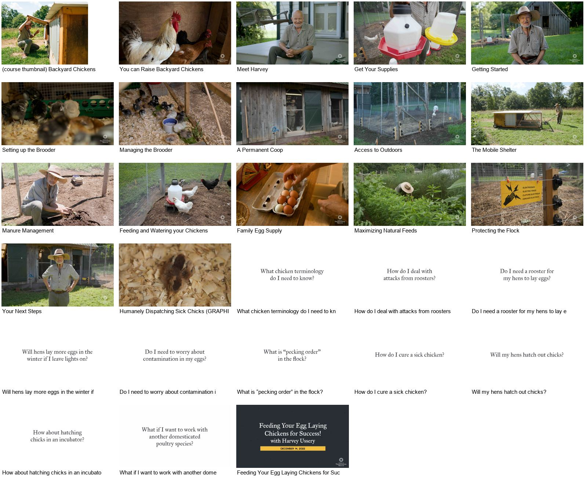</details>
</section>
<section id="v2-04-dehydrating">
 <h2>Dehydrating</h2>
 <p class=meta>Ad set from Mon Dec 7 · teacher: Darcy Baldwin · hook 86 chars</p>
 <div class=row>
  <div class=fb tabindex=0>
   <div class=hd><div class=av></div><div><b>School of Traditional Skills</b><br><span>Sponsored</span></div></div>
   <div class=pt>What if this week&#x27;s &quot;On Sale&quot; produce turned into snacks and meals that last all year?<br><br>Store prices for dried fruit and<span class=more> ...See more</span><span class=rest> jerky add up fast, and a lot of folks put off preserving food because they think it takes acres or expensive gear, so they feel behind before they ever start. Food security shouldn&#x27;t be only for people with a farm.<br><br>Carolyn and I actually started in the city, in a second story apartment with little plants in pots on the balcony. You start where you&#x27;re at.<br><br>Dehydrating is an easy, inexpensive place to start, and Darcy Baldwin, author of Dehydrating Basics &amp; Journal, makes it really simple: fruit, vegetables, even jerky. Get her Dehydrating class for $29 (usually $199), only 250 spots, and these classes sell out every year.</span></div>
   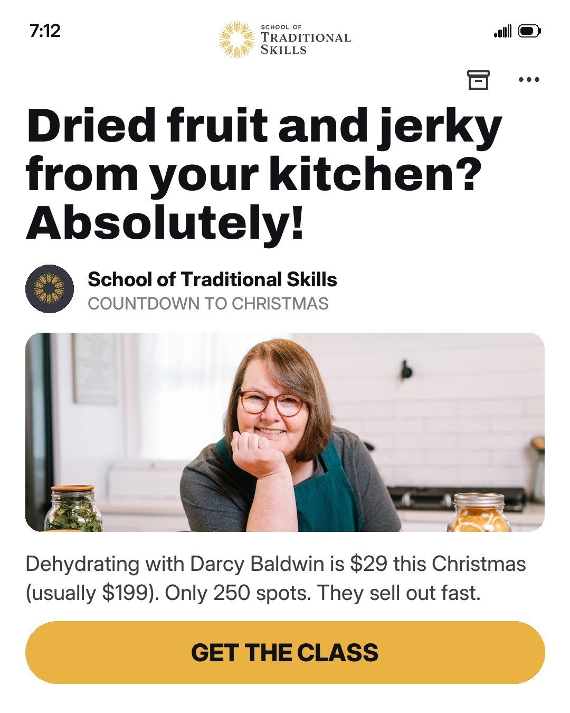
   <div class=ft><div><div class=url>SCHOOLOFTRADITIONALSKILLS.COM</div><div class=hl>Stock Your Pantry with Healthy Snacks and Meals that Last</div><div class=ds>Get Darcy&#x27;s class for $29 before it sells out.</div></div><div class=btn>Shop Now</div></div>
  </div>
  <div class=notes>
   <h3>Alternate opener (Copy Doc hook 2)</h3><p>Tired of paying store prices for dried fruit and jerky?</p>
   <h3>Headline options</h3><ol><li>Stock Your Pantry with Healthy Snacks and Meals that Last <small>(57)</small></li><li>Fill Your Shelves on a Budget with Darcy&#x27;s Dehydrating Class <small>(60)</small></li><li>Dried Fruit and Jerky From Your Kitchen? Absolutely! <small>(52)</small></li></ol>
   <h3>Pulled from these emails</h3><ul><li>21089705 Summit reminder (Sep 24 2025): &#x27;you need zero land to master this skill&#x27; / &#x27;an easy inexpensive place to start is with food dehydration&#x27;</li><li>No sales email for this class</li></ul>
   <h3>Flags</h3><p>LMS lists Josh as the instructor field; Darcy Baldwin teaches it (Summit email confirms her class and book).</p>
  </div>
 </div>
 <details><summary>All 33 LMS images for this class</summary>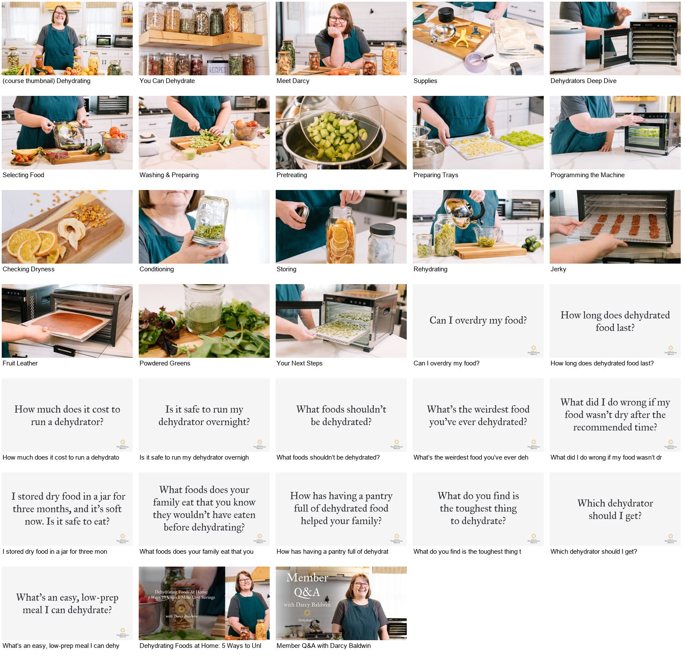</details>
</section>
<section id="v2-05-pressure-canning">
 <h2>Pressure Canning</h2>
 <p class=meta>Ad set from Wed Dec 9 · teacher: Carolyn Thomas · hook 90 chars</p>
 <div class=row>
  <div class=fb tabindex=0>
   <div class=hd><div class=av></div><div><b>School of Traditional Skills</b><br><span>Sponsored</span></div></div>
   <div class=pt>Soccer practice, homework, and no energy to cook? What if dinner was already on the shelf?<br><br>Maybe the pressure canner is<span class=more> ...See more</span><span class=rest> sitting in the closet because it still scares you a little. Your family shouldn&#x27;t depend on drive-thru dinners when life gets hectic.<br><br>My wife Carolyn has spent years filling our pantry with pressure-canned meals: garden vegetables, bone broth, pot pie filling. I love being able to pull a nourishing meal off the shelf in a hectic season.<br><br>With a pressure canner, safety is the whole thing, so Carolyn teaches it safely and step by step, with a printable guide full of safety checklists, recipes, and timing charts. One student said it took all the fear out of pressure canning. Get it for $29 (usually $199), only 250 spots, and these classes sell out every year.</span></div>
   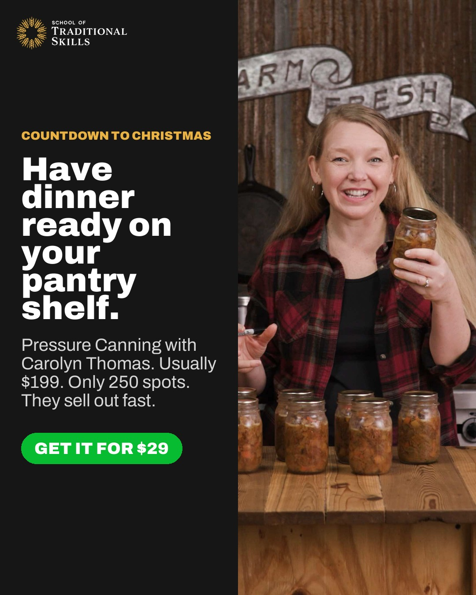
   <div class=ft><div><div class=url>SCHOOLOFTRADITIONALSKILLS.COM</div><div class=hl>Have Dinner Ready on Your Pantry Shelf</div><div class=ds>Get Carolyn&#x27;s class for $29 before it sells out.</div></div><div class=btn>Shop Now</div></div>
  </div>
  <div class=notes>
   <h3>Alternate opener (Copy Doc hook 2)</h3><p>Want to pressure can but worried about doing it safely?</p>
   <h3>Headline options</h3><ol><li>Have Dinner Ready on Your Pantry Shelf <small>(38)</small></li><li>Ready Meals for Busy Nights, Safely Canned by You <small>(49)</small></li><li>Safe Pressure Canning With Confidence with Carolyn Thomas <small>(57)</small></li></ol>
   <h3>Pulled from these emails</h3><ul><li>22146914 &#x27;What if your pantry cooked dinner FOR you?&#x27; (Dec 12 2025)</li></ul>
   <h3>Flags</h3><p>Paraphrases the email&#x27;s testimonial (&#x27;Carolyn&#x27;s class took all the fear out of pressure canning!!&#x27;, Victoria K.). Confirm STS is fine using it in ads.</p>
  </div>
 </div>
 <details><summary>All 27 LMS images for this class</summary>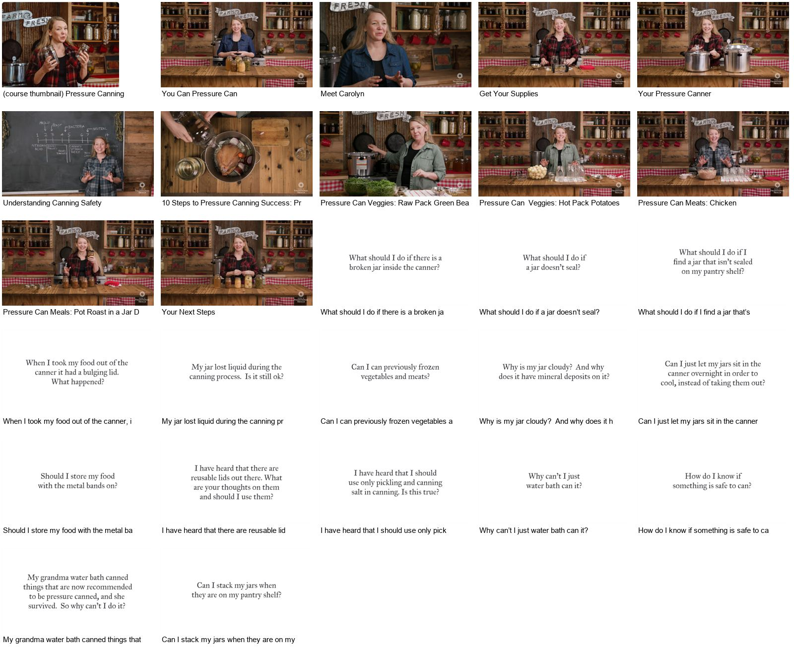</details>
</section>
<section id="v2-06-cheese">
 <h2>Artisanal Cheeses for the Home Kitchen</h2>
 <p class=meta>Ad set from Fri Dec 11 · teacher: Beth Dougherty · hook 78 chars</p>
 <div class=row>
  <div class=fb tabindex=0>
   <div class=hd><div class=av></div><div><b>School of Traditional Skills</b><br><span>Sponsored</span></div></div>
   <div class=pt>Think cheesemaking takes pH meters, exact temperatures, and a perfect kitchen?<br><br>Charts, expensive gear, and the fear of<span class=more> ...See more</span><span class=rest> wasting good milk. It&#x27;s enough to make anyone give up before they start. Cheesemaking should fit your life, not the other way around.<br><br>We&#x27;ve had two dairy cows in full milk on our three acres, so I know how fast the milk piles up. Beth Dougherty has been homesteading since the 1980s with eight kids at home, so her method had to fit a real, busy kitchen.<br><br>In Beth&#x27;s class you make mozzarella, provolone, and aged farmhouse cheeses without a press, a kit, or a cheese cave. Her advice is freeing: most results are perfectly edible, keep going. Get it for $29, only 250 spots, and these classes sell out every year.</span></div>
   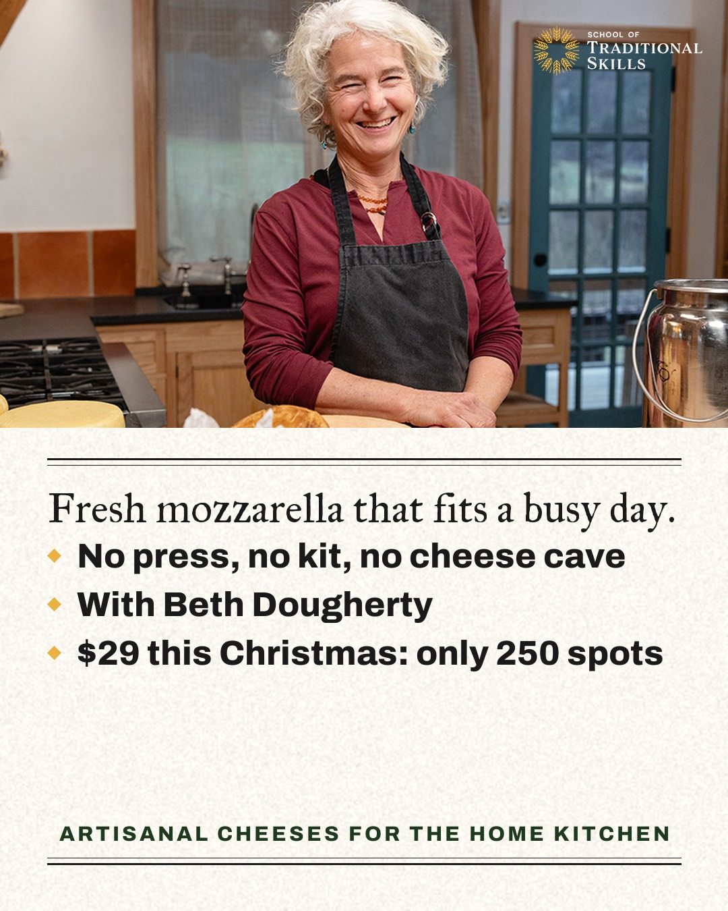
   <div class=ft><div><div class=url>SCHOOLOFTRADITIONALSKILLS.COM</div><div class=hl>Fresh Mozzarella That Fits a Busy Day</div><div class=ds>Get Beth&#x27;s cheese class for $29 before it sells out.</div></div><div class=btn>Shop Now</div></div>
  </div>
  <div class=notes>
   <h3>Alternate opener (Copy Doc hook 2)</h3><p>Got fresh milk coming in faster than your family can drink it? Let&#x27;s turn it into cheese!</p>
   <h3>Headline options</h3><ol><li>Fresh Mozzarella That Fits a Busy Day <small>(37)</small></li><li>Homemade Cheese Made Simply. No Fancy Equipment Needed! <small>(55)</small></li><li>Make Nourishing Cheese Without Fancy Gear in Your Kitchen <small>(57)</small></li></ol>
   <h3>Pulled from these emails</h3><ul><li>22218790 &#x27;Throw out your cheesemaking books!!&#x27; (Dec 22 2025)</li><li>20394787 &#x27;NEW! Artisanal cheese class&#x27; (Aug 4 2025)</li></ul>
   <h3>Flags</h3><p>Teacher confirmed as Beth Dougherty by both emails (LMS shows a staff account). No &#x27;usually $199&#x27;: LMS only shows $99 for this class.</p>
  </div>
 </div>
 <details><summary>All 30 LMS images for this class</summary>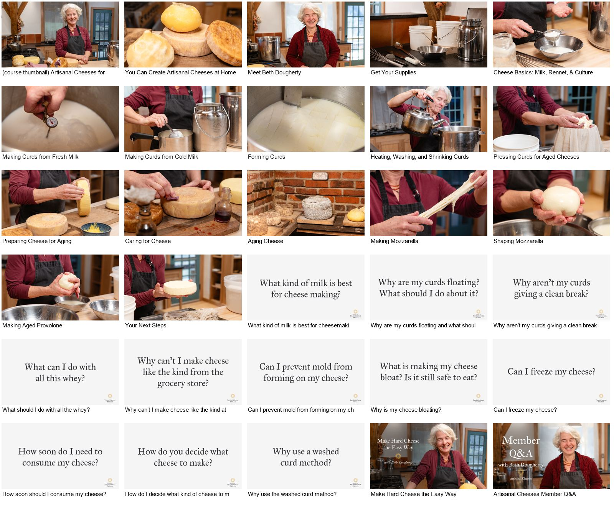</details>
</section>
<section id="v2-07-herbal-first-aid">
 <h2>Herbal First Aid</h2>
 <p class=meta>Ad set from Sat Dec 12 · teacher: Doc Jones · hook 74 chars</p>
 <div class=row>
  <div class=fb tabindex=0>
   <div class=hd><div class=av></div><div><b>School of Traditional Skills</b><br><span>Sponsored</span></div></div>
   <div class=pt>Kitchen knife cut or a wasp sting: would you know which herb to reach for?<br><br>When you live out a ways or work with tools<span class=more> ...See more</span><span class=rest> every day, help isn&#x27;t always close, and that thought can sit in the back of your mind. Caring for your own family shouldn&#x27;t depend on how far you are from town.<br><br>Carolyn and I have been through fires, evacuations, and floods. You learn very quickly what you wish you&#x27;d known before you needed it.<br><br>Doc Jones teaches Herbal First Aid step by step: bleeding, wounds, burns, bee and wasp stings, pain, sprains, and when to get help. It&#x27;s a great gift for the outdoorsman in your life too. Get it for $29 (usually $199), only 250 spots, and these classes sell out every year.</span></div>
   
   <div class=ft><div><div class=url>SCHOOLOFTRADITIONALSKILLS.COM</div><div class=hl>Be Ready for Cuts, Stings, and Sprains</div><div class=ds>Get Doc Jones&#x27; class for $29 before it sells out.</div></div><div class=btn>Shop Now</div></div>
  </div>
  <div class=notes>
   <h3>Alternate opener (Copy Doc hook 2)</h3><p>Want to use herbs for first aid but afraid of doing more harm than good?</p>
   <h3>Headline options</h3><ol><li>Be Ready for Cuts, Stings, and Sprains <small>(38)</small></li><li>Herbal First Aid for Cuts and Stings <small>(36)</small></li><li>Be Ready for the Next Cut or Sting Before It Happens <small>(52)</small></li></ol>
   <h3>Pulled from these emails</h3><ul><li>21858191 &#x27;Tools for him (not the junk drawer)&#x27; (Nov 22 2025, lesson list)</li><li>21858428 (Nov 26 2025)</li></ul>
   <h3>Flags</h3><p>Left out &#x27;treat eye problems&#x27; and &#x27;prevent infection&#x27; (health policy). Burns, bleeding, wounds, pain and sprains are all lesson titles in the LMS class.</p>
  </div>
 </div>
 <details><summary>All 37 LMS images for this class</summary>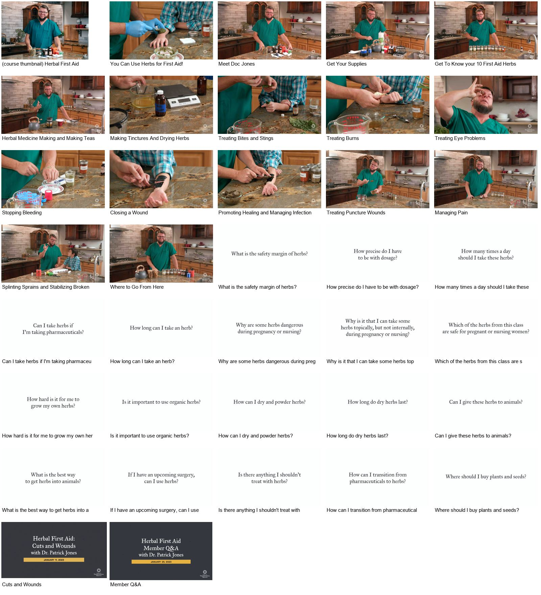</details>
</section>
<section id="v2-08-meat-chickens">
 <h2>Raising Pastured Meat Chickens</h2>
 <p class=meta>Ad set from Mon Dec 14 · teacher: Justin Rhodes · hook 75 chars</p>
 <div class=row>
  <div class=fb tabindex=0>
   <div class=hd><div class=av></div><div><b>School of Traditional Skills</b><br><span>Sponsored</span></div></div>
   <div class=pt>What if you could raise a whole year of chicken for your family in 58 days?<br><br>Grocery store chicken is like a tomato shipped<span class=more> ...See more</span><span class=rest> halfway across the country. And raising your own sounds great until you think about butchering day and feel completely out of your depth. Good food shouldn&#x27;t be something only big farms can make.<br><br>Over the years my family has raised thousands of meat birds, and there&#x27;s a world of difference between a bird that&#x27;s had grass to scratch in and what you find in the store.<br><br>Justin Rhodes takes you from &#x27;where do I even start&#x27; to dinner on the table, step by step: chicks, pasture, butchering day done humanely, and the freezer. It&#x27;s really doable. Get it for $29 (usually $199), only 250 spots, and these classes sell out every year.</span></div>
   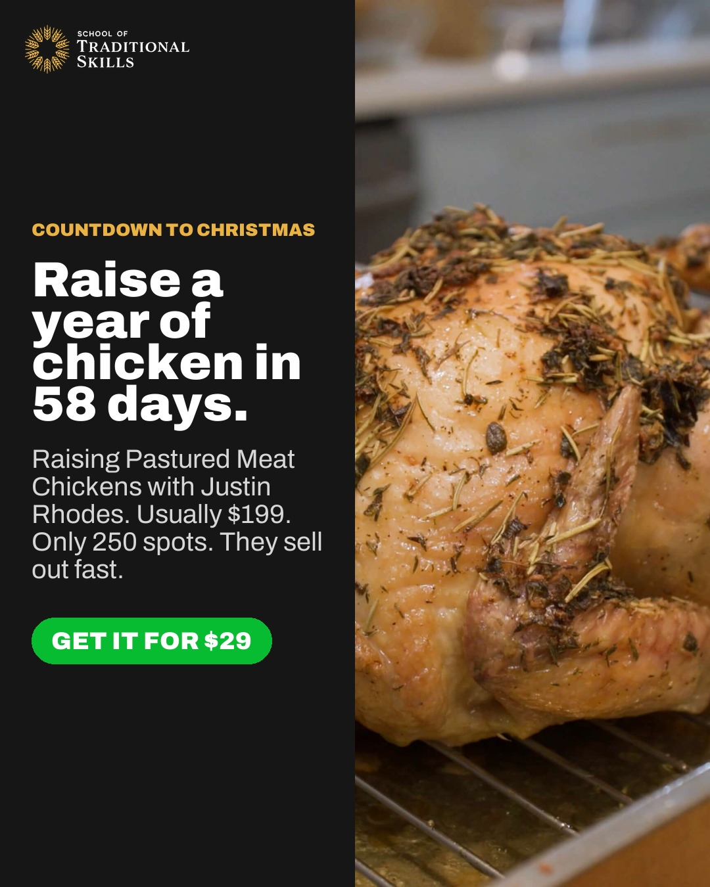
   <div class=ft><div><div class=url>SCHOOLOFTRADITIONALSKILLS.COM</div><div class=hl>Raise A Year of Chicken in 58 Days</div><div class=ds>Get Justin&#x27;s class for $29 before it sells out.</div></div><div class=btn>Shop Now</div></div>
  </div>
  <div class=notes>
   <h3>Alternate opener (Copy Doc hook 2)</h3><p>Want to raise your own meat chickens but have no idea where to start?</p>
   <h3>Headline options</h3><ol><li>Raise A Year of Chicken in 58 Days <small>(34)</small></li><li>You Can Raise A Year of Chicken From Your Backyard <small>(50)</small></li><li>Tastier Chicken You Raised Yourself? Totally Doable! <small>(52)</small></li></ol>
   <h3>Pulled from these emails</h3><ul><li>22119010 &#x27;...you could have a YEAR&#x27;s worth of meat!&#x27; (Dec 10 2025)</li></ul>
   <h3>Flags</h3><p>Dropped the subject line&#x27;s &#x27;a YEAR&#x27;s worth of meat&#x27; (not supported in the email). &#x27;58 days&#x27; now used: verified in the class intro, lesson &#x27;You Can Raise a Year of Chicken Meat in 58 Days&#x27; (Justin: &#x27;a year&#x27;s worth of chicken for you and your family in just 58 days&#x27;).</p>
  </div>
 </div>
 <details><summary>All 27 LMS images for this class</summary>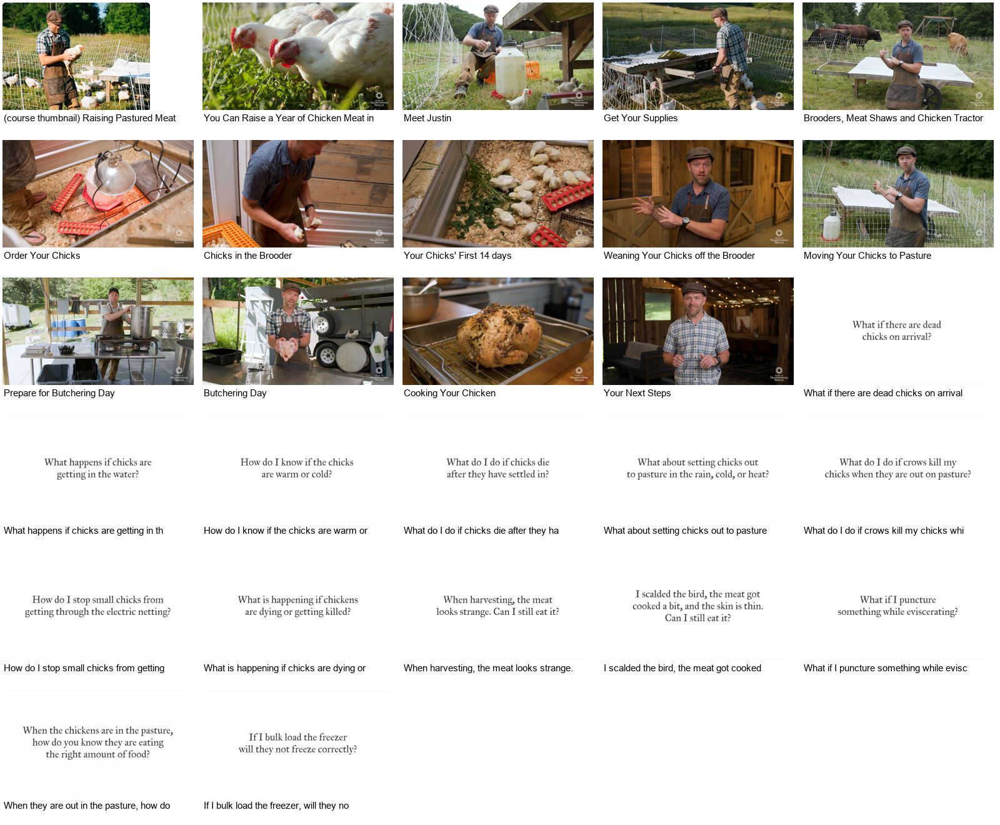</details>
</section>
<section id="v2-09-everyday-bread">
 <h2>Everyday Bread Baking</h2>
 <p class=meta>Ad set from Wed Dec 16 · teacher: Kristin Nobles · hook 45 chars</p>
 <div class=row>
  <div class=fb tabindex=0>
   <div class=hd><div class=av></div><div><b>School of Traditional Skills</b><br><span>Sponsored</span></div></div>
   <div class=pt>Love homemade bread but can&#x27;t bake every day?<br><br>Between work, kids, and everything else, from-scratch baking starts to feel<span class=more> ...See more</span><span class=rest> like one more thing you&#x27;re behind on. Real bread shouldn&#x27;t take your whole day.<br><br>When Carolyn and I got started, there were no mentors, no neighbors to ask, just a few books and the school of hard knocks. A good teacher would have saved us so much flour.<br><br>Kristin Nobles teaches Everyday Bread Baking: homemade bread that fits into your weekly routine, plus hassle free holiday baking. Get it for $29, only 250 spots, and these classes sell out every year.</span></div>
   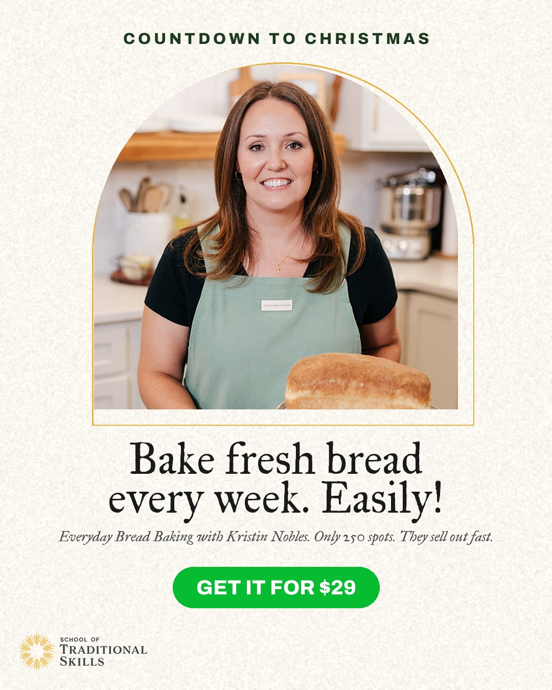
   <div class=ft><div><div class=url>SCHOOLOFTRADITIONALSKILLS.COM</div><div class=hl>Enjoy Homemade Bread on a Budget</div><div class=ds>Get Kristin&#x27;s class for $29 before it sells out.</div></div><div class=btn>Shop Now</div></div>
  </div>
  <div class=notes>
   <h3>Alternate opener (Copy Doc hook 2)</h3><p>Paying bakery prices for bread you could bake at home with simple ingredients?</p>
   <h3>Headline options</h3><ol><li>Enjoy Homemade Bread on a Budget <small>(32)</small></li><li>Bake Fresh Bread Every Week. Easily! <small>(36)</small></li><li>Bake Once, Fresh Bread All Week with Kristin Nobles <small>(51)</small></li></ol>
   <h3>Pulled from these emails</h3><ul><li>No STS email has sold this class. Copy from the LMS class description and Josh&#x27;s story bank</li></ul>
   <h3>Flags</h3><p>No email source exists. No &#x27;usually $199&#x27;: LMS only shows $99 for this class.</p>
  </div>
 </div>
 <details><summary>All 40 LMS images for this class</summary>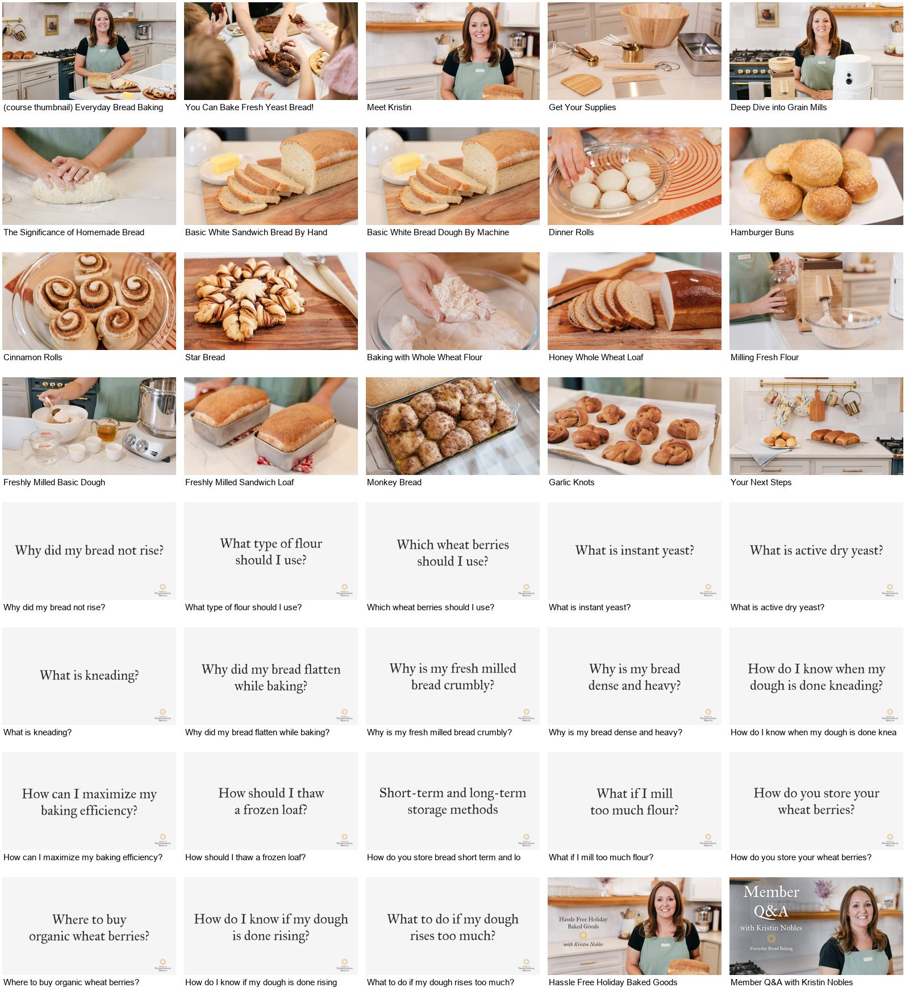</details>
</section>
<section id="v2-10-fermenting">
 <h2>Vegetable Fermentation</h2>
 <p class=meta>Ad set from Fri Dec 18 · teacher: Lisa Bass · hook 81 chars</p>
 <div class=row>
  <div class=fb tabindex=0>
   <div class=hd><div class=av></div><div><b>School of Traditional Skills</b><br><span>Sponsored</span></div></div>
   <div class=pt>Think fermenting is complicated? All you need is salt, water, a knife, and a jar.<br><br>Most of us want our family eating more<span class=more> ...See more</span><span class=rest> real, nourishing food, but between salt ratios and wondering whether a ferment is safe to eat, it feels like one more complicated project. Good food shouldn&#x27;t feel like a science experiment.<br><br>In 2018 a fire knocked out our power for three weeks. What kept were the foods that didn&#x27;t need a freezer, and that&#x27;s really stuck with me.<br><br>Lisa Bass teaches Vegetable Fermentation: sauerkraut and condiments your kids will actually eat, made in minutes with vegetables, salt, and time. She has 8 kids, so it has to be simple. Get it for $29 (usually $199), only 250 spots, and these classes sell out every year.</span></div>
   
   <div class=ft><div><div class=url>SCHOOLOFTRADITIONALSKILLS.COM</div><div class=hl>Ferments in Minutes? Let&#x27;s Get Started!</div><div class=ds>Get Lisa&#x27;s class for $29 before it sells out.</div></div><div class=btn>Shop Now</div></div>
  </div>
  <div class=notes>
   <h3>Alternate opener (Copy Doc hook 2)</h3><p>Never sure how much salt to add, or whether your ferment is safe to eat?</p>
   <h3>Headline options</h3><ol><li>Ferments in Minutes? Let&#x27;s Get Started! <small>(39)</small></li><li>Make Condiments Your Kids Will Love. Really! <small>(44)</small></li><li>Learn to make delicious fermented foods your family will enjoy <small>(62)</small></li></ol>
   <h3>Pulled from these emails</h3><ul><li>22203248 &#x27;Better digestion, better immunity?!&#x27; (Dec 19 2025)</li></ul>
   <h3>Flags</h3><p>Left out &#x27;boost immunity&#x27; (health claim). &#x27;What kept were the foods that didn&#x27;t need a freezer&#x27; is my framing of the blackout story: CONFIRM with Josh or cut that sentence.</p>
  </div>
 </div>
 <details><summary>All 26 LMS images for this class</summary>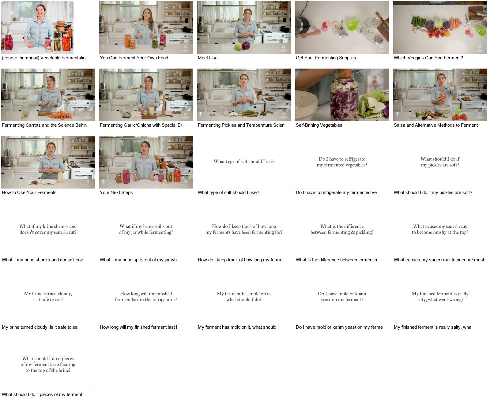</details>
</section>
<section id="v2-11-bulk-pantry">
 <h2>Bulk Pantry</h2>
 <p class=meta>Ad set from Mon Dec 21 · teacher: Victoria Pruett · hook 67 chars</p>
 <div class=row>
  <div class=fb tabindex=0>
   <div class=hd><div class=av></div><div><b>School of Traditional Skills</b><br><span>Sponsored</span></div></div>
   <div class=pt>Ever opened a full pantry and still had nothing to make for dinner?<br><br>Throwing out food that expired before anyone ate it, or<span class=more> ...See more</span><span class=rest> buying expensive survival food you&#x27;ll never eat, feels wasteful, and winging it leaves you uneasy. Food security shouldn&#x27;t cost a fortune.<br><br>In 2008 our business was basically destroyed in the financial crisis. A deep pantry is a big part of how a family gets through a season like that.<br><br>Victoria Pruett&#x27;s Bulk Pantry class walks you step by step from a 30-day supply up to three months or a full year, with food your family will actually eat. Get it for $29, only 250 spots, and these classes sell out every year.</span></div>
   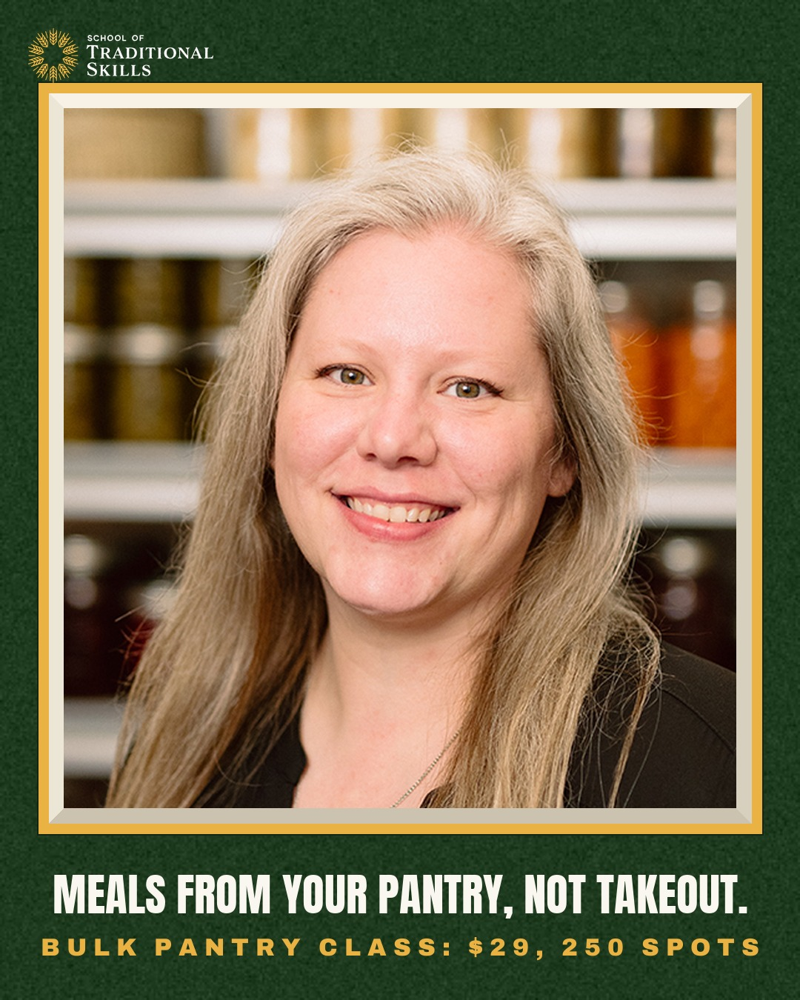
   <div class=ft><div><div class=url>SCHOOLOFTRADITIONALSKILLS.COM</div><div class=hl>Let&#x27;s Build a Grocery Store in Your Pantry!</div><div class=ds>Get Victoria&#x27;s class for $29 before it sells out.</div></div><div class=btn>Shop Now</div></div>
  </div>
  <div class=notes>
   <h3>Alternate opener (Copy Doc hook 2)</h3><p>Tired of throwing out food that expired before anyone ate it?</p>
   <h3>Headline options</h3><ol><li>Let&#x27;s Build a Grocery Store in Your Pantry! <small>(43)</small></li><li>Meals From Your Pantry, Not Takeout <small>(35)</small></li><li>A Pantry Your Family Will Eat From. All Year Long! <small>(50)</small></li></ol>
   <h3>Pulled from these emails</h3><ul><li>22218892 &#x27;Why I&#x27;m breaking up with Costco...&#x27; (Dec 24 2025)</li></ul>
   <h3>Flags</h3><p>Teacher confirmed as Victoria Pruett by the email. Did not use the &#x27;breaking up with Costco&#x27; angle as a Josh fact. No &#x27;usually $199&#x27;: LMS only shows $99.</p>
  </div>
 </div>
 <details><summary>All 32 LMS images for this class</summary>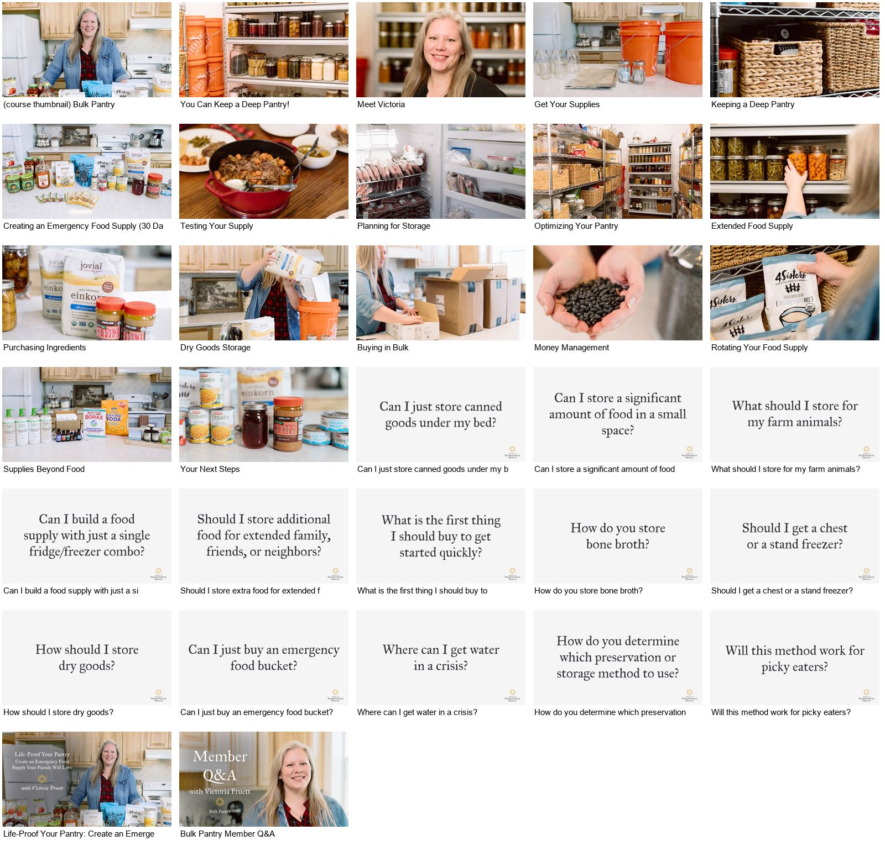</details>
</section>
<section id="v2-12-survival-gardening">
 <h2>Survival Gardening</h2>
 <p class=meta>Ad set from Wed Dec 23 · teacher: David the Good · hook 69 chars</p>
 <div class=row>
  <div class=fb tabindex=0>
   <div class=hd><div class=av></div><div><b>School of Traditional Skills</b><br><span>Sponsored</span></div></div>
   <div class=pt>Did your garden give you salad greens but nothing that fills a plate?<br><br>A pretty garden and a garden full of calories are two<span class=more> ...See more</span><span class=rest> very different things, and it&#x27;s unsettling to realize which one you&#x27;ve been growing. Feeding your family shouldn&#x27;t depend on the grocery store.<br><br>One year I spent over $2,000 on a garden in heavy Tennessee clay, and we estimated it produced $8,000 worth of vegetables. The right crops change everything.<br><br>David the Good, author of Compost Everything, teaches Survival Gardening: the staple crops that actually feed a family. Plan your spring garden over Christmas. Get it for $29 (usually $199), only 250 spots, and these classes sell out every year.</span></div>
   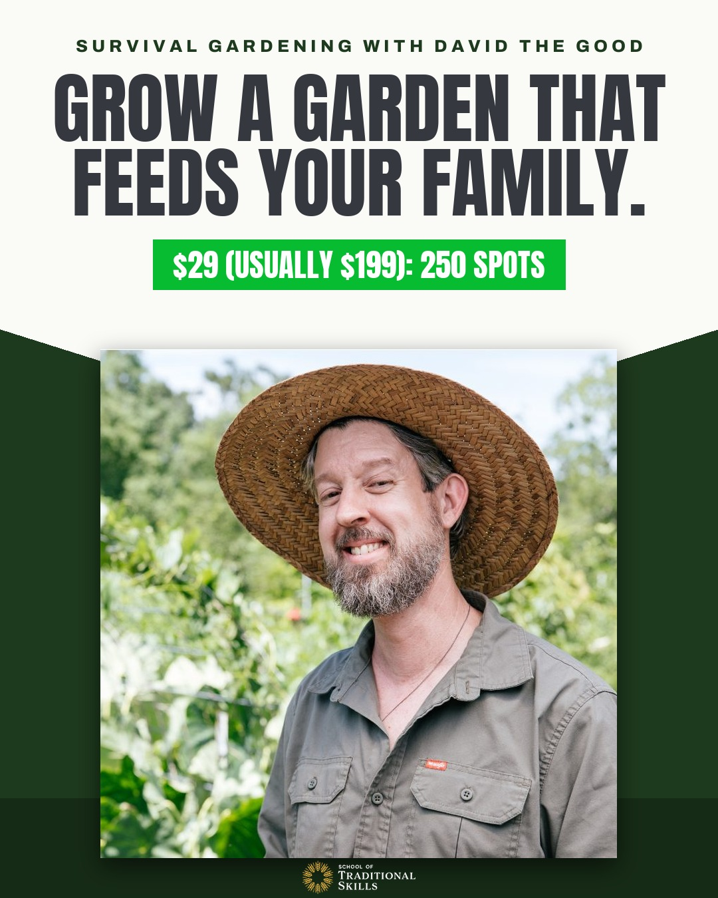
   <div class=ft><div><div class=url>SCHOOLOFTRADITIONALSKILLS.COM</div><div class=hl>Grow A Garden That Feeds Your Family</div><div class=ds>Get David&#x27;s class for $29 before it sells out.</div></div><div class=btn>Shop Now</div></div>
  </div>
  <div class=notes>
   <h3>Alternate opener (Copy Doc hook 2)</h3><p>Small backyard, poor soil, and not sure which crops grow best where you live?</p>
   <h3>Headline options</h3><ol><li>Grow A Garden That Feeds Your Family <small>(36)</small></li><li>Learn How to Grow Filling Food in a Small Backyard <small>(50)</small></li><li>You Can Grow More Food Without Fancy Gadgets <small>(44)</small></li></ol>
   <h3>Pulled from these emails</h3><ul><li>21014965 Summit reminder (Sep 22 2025): confirms David teaches the class, author of Compost Everything</li><li>No sales email for this class</li></ul>
   <h3>Flags</h3><p>Last day of the promo (Dec 23). No sales email exists.</p>
  </div>
 </div>
 <details><summary>All 27 LMS images for this class</summary>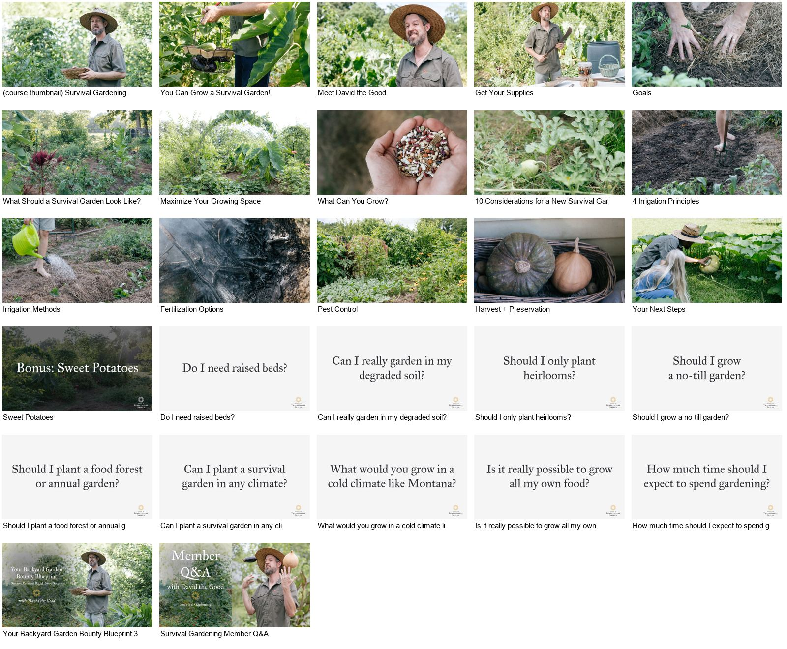</details>
</section>
<section id="v2-13-gift">
 <h2>All Classes (gift angle)</h2>
 <p class=meta>Ad set Dec 2 to 23 · teacher: all 12 teachers · hook 74 chars</p>
 <div class=row>
  <div class=fb tabindex=0>
   <div class=hd><div class=av></div><div><b>School of Traditional Skills</b><br><span>Sponsored</span></div></div>
   <div class=pt>Shopping for someone who doesn&#x27;t need one more thing to store in a closet?<br><br>Most gifts break, gather dust, or end up in a<span class=more> ...See more</span><span class=rest> drawer by spring, and it&#x27;s hard to find something that feels like it matters. A good gift should outlast the wrapping paper.<br><br>If you&#x27;re anything like me, you&#x27;ve got at least one person in your life who would love to learn, grow, and build new skills.<br><br>This December, a different class is $29 every couple of days: sourdough, herbal remedies, canning, cheese, chickens, and more. Gift it and pick the delivery day, Christmas morning or January 1st. It&#x27;s yours to keep, no monthly fees. Each class has only 250 spots and they sell out every year, so get one now and make somebody really happy.</span></div>
   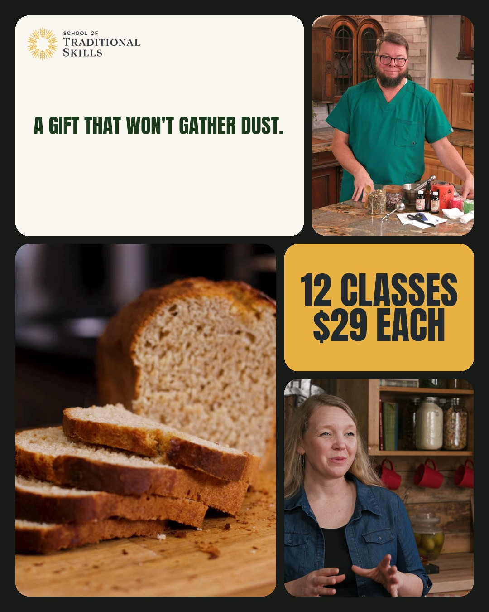
   <div class=ft><div><div class=url>SCHOOLOFTRADITIONALSKILLS.COM</div><div class=hl>A Gift That Won&#x27;t Gather Dust</div><div class=ds>Give a class for $29, delivered the day you choose.</div></div><div class=btn>Shop Now</div></div>
  </div>
  <div class=notes>
   
   <h3>Headline options</h3><ol><li>A Gift That Won&#x27;t Gather Dust <small>(29)</small></li><li>Give a Skill They&#x27;ll Use for Years <small>(34)</small></li><li>Pay $29 Once. Keep the Class Forever. <small>(37)</small></li></ol>
   <h3>Pulled from these emails</h3><ul><li>21858325 &#x27;The skill-building gift that keeps on giving&#x27; (Nov 24 2025)</li><li>21856161 (Nov 21 2025): &#x27;choose the exact date your gift is delivered&#x27;</li><li>Copy Doc gift cart: &#x27;we&#x27;ll deliver your gift on the chosen date&#x27;</li></ul>
   <h3>Flags</h3><p>Delivery-date choice is from 2025 emails and the 2026 gift cart template. Confirm &#x27;Christmas morning&#x27; works for 2026.</p>
  </div>
 </div>
 
</section>
<section id="v2-14-sold-out">
 <h2>Sold Out (EGGNOG40)</h2>
 <p class=meta>From the first sell-out to Dec 31 · teacher: any class · hook 74 chars</p>
 <div class=row>
  <div class=fb tabindex=0>
   <div class=hd><div class=av></div><div><b>School of Traditional Skills</b><br><span>Sponsored</span></div></div>
   <div class=pt>Missed the $29 class you had your eye on? You&#x27;re not too late to learn it.<br><br>December hits like a whirlwind and a class sells<span class=more> ...See more</span><span class=rest> out while you&#x27;re busy decorating. It stings a little. You shouldn&#x27;t lose a whole year of learning over one busy week.<br><br>I hauled water in five gallon buckets for 15 years before I made a better plan, so I know all about putting things off.<br><br>Take 40% off any class in the School with code EGGNOG40 through December 31. Every class is yours to keep, no monthly fees, and well worth starting the new year with. Take a look.</span></div>
   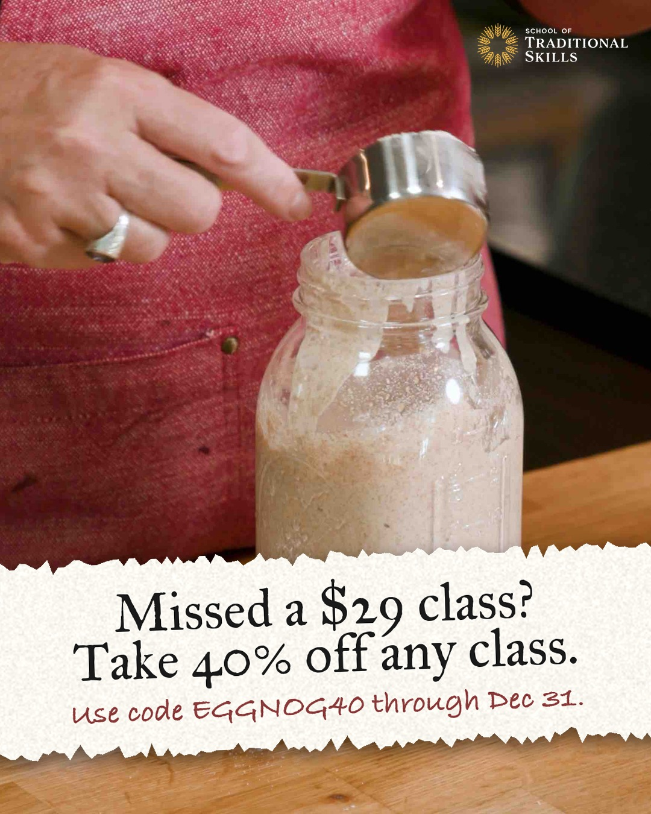
   <div class=ft><div><div class=url>SCHOOLOFTRADITIONALSKILLS.COM</div><div class=hl>You&#x27;re Not Too Late to Learn It</div><div class=ds>Take 40% off any class with code EGGNOG40.</div></div><div class=btn>Shop Now</div></div>
  </div>
  <div class=notes>
   
   <h3>Headline options</h3><ol><li>You&#x27;re Not Too Late to Learn It <small>(31)</small></li><li>40% Off Any Class Through Dec 31 <small>(32)</small></li><li>Start the New Year With a Skill <small>(31)</small></li></ol>
   <h3>Pulled from these emails</h3><ul><li>22171074 &#x27;Did you miss this?!&#x27; (Dec 12 2025): &#x27;December hits like a whirlwind&#x27;</li><li>22287854 &#x27;$19 classes disappear...&#x27; (Dec 31 2025)</li></ul>
   <h3>Flags</h3><p>Headline variant 2 is a price line (Phil&#x27;s call). The STS Copy Doc sold-out page still says EGGNOG50 / 50%: must match before launch.</p>
  </div>
 </div>
 
</section>
</main>